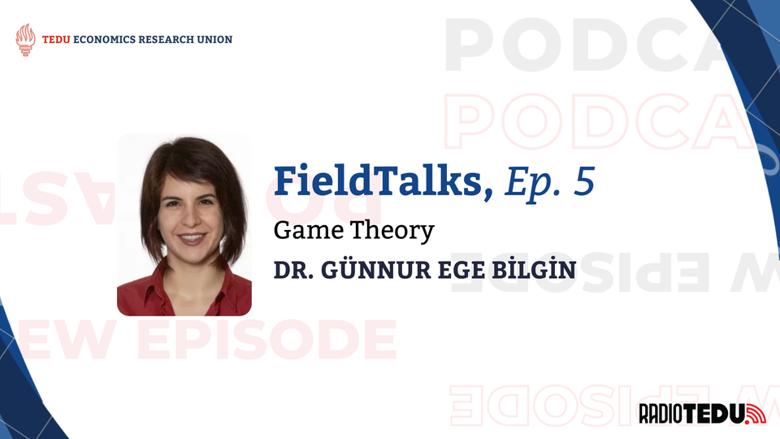
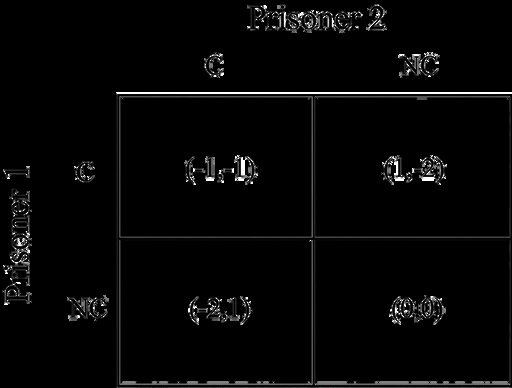

The "FieldTalks" podcast series, prepared in collaboration with the TED University Economics Research Union and broadcast on RadioTEDU, presented an episode with Dr. Günnur Ege Bilgin in which the theoretical foundations and practical applications of Game Theory were discussed. This episode welcomed Dr. Bilgin back to the studio, accompanied by a special guest, Dr. Bilgin's dog Neşe, following her previous session on Matching Theory and Market Design. It was hosted by Arda Akgül and Ezgi Eylem Erdoğan.

Defining Game Theory
Dr. Bilgin defines Game Theory not only as the study of games but also as the mathematical analysis of strategic interaction among decision-makers. In economic terminology, these decisionmakers are referred to as "agents," which can represent individuals, corporations, political parties, or nations. Dr. Bilgin states that whenever an agent's objective function, let it be profitability, satisfaction, or utility, is directly affected by the choices of another agent, Game Theory becomes the essential part of analysis.
Whenever an agent's objective function is directly affected by the choices of another agent, Game Theory becomes the essential part of analysis. — Dr. Günnur Ege Bilgin
The Ubiquity of Strategic Interaction
Dr. Bilgin emphasizes that Game Theory is shown in everyday life, often occurring in situations where individuals may not realize they are engaging in strategic calculation. She illustrates this with the example of bargaining at a bazaar. The seller places a high price tag not as a final offer but as a strategic anchor, anticipating that the buyer's counter-offer will follow. Similarly, in traffic, a driver's decision to yield or proceed is often based on a current assessment of the other driver's aggressiveness or intent. Even in academic settings, students engage in game-theoretic behavior: a student's decision on how much to study for a midterm is often a strategic response to the perceived preparation levels of their peers and the grading curve set by the instructor. These interactions mirror the biological competition seen in nature, where animals compete for territory or food, further validating the theory's application across disciplines from biology to sociology.
Historical Evolution: From Oligopolies to Nash
Dr. Bilgin outlines the historical trajectory of the field. While formal Game Theory is often associated with the 20th century, its roots lie in the 1700s and 1800s. Early economic models by Cournot and Bertrand examined oligopolies—markets with few sellers—where firms had to consider competitors' prices or quantities. However, the major turning point occurred in the 1950s with John Nash. Prior to Nash, pioneers like von Neumann and Morgenstern focused largely on "zero-sum games," where one party's gain is strictly the other's loss. Nash revolutionized the field by generalizing the theory to apply to all types of interactions, proving that an equilibrium exists even in complex, non-zero-sum scenarios.
The "Nash Equilibrium" describes a state of mutual consistency where no player has an incentive to deviate from their strategy, provided others do not change theirs. This concept remains the foundation of modern microeconomic theory.

Game Theory in the Turkish Academic Landscape
Türkiye also has a strong position in the field of microeconomic theory. Dr. Bilgin notes that because Game Theory acts as a foundational "language" or toolset for various economics disciplines, many Turkish academics are, by definition, game theorists. She highlights that scholars across major institutions like Boğaziçi, Koç, Bilkent, METU, and TED University utilize these tools to study Industrial Organization, Mechanism Design, and Social Choice Theory. Dr. Bilgin points out that political elections are a prime example of these theories in action. The interaction between voters, who may vote strategically rather than sincerely, and candidates, who adjust agendas to gain the median voter, is a complex game analyzed by mechanism designers and social choice theorists within the Turkish academy.
Solving Global Crises as Collective Action Problems
When addressing whether Game Theory can solve major global issues like climate change or the refugee crisis, Dr. Bilgin argues that the theory explains exactly why these problems are so difficult to resolve. These are classic "collective action" problems where individual incentives conflict with the collective good.
Climate Change: While all nations benefit from a stable climate, the individual incentive for a country is often to continue polluting to maximize industrial growth while hoping other nations bear the cost of reduction.
Refugee Crisis: Countries may agree on the humanitarian need to host refugees, but each individual nation often prefers that neighbors shoulder the burden.
Dr. Bilgin suggests that recognizing these structures allows for "Mechanism Design"—the reverse-engineering of a game. By altering incentives and regulations, policymakers can make the socially cooperative choice (reducing emissions or hosting refugees) the rational "best response" for individual agents.

Forward Induction and the Stag Hunt
To move beyond standard examples like the Prisoner's Dilemma, Dr. Bilgin introduces "Forward Induction" through the "Stag Hunt" game. In this scenario, two hunters must choose between hunting a stag (high reward, requires cooperation) or a hare (low reward, can be done alone). Without communication, the fear that the other might choose the hare often drives both to the low-reward equilibrium. Dr. Bilgin explains how adding a past option, such as a "Tea Garden," can solve this. If an agent had the option to go to a tea garden for a medium reward but chose to hunt instead, the other player can deduce a specific intent. They infer that the agent would not have skipped the tea just to hunt a hare (which offers low reward). Therefore, the agent must be targeting the stag. This "Forward Induction"—analyzing past actions to predict future rational behavior—allows players to coordinate on the optimal outcome.
Artificial Intelligence and the Perfection of Rationality
The integration of artificial intelligence into the economy offers a promising frontier for Game Theory. Dr. Bilgin notes that human players often exhibit a "trembling hand," making errors or acting irrationally due to emotion. AI agents, however, can be programmed to strictly apply rational strategies. Dr. Bilgin uses the example of autonomous vehicles to illustrate this benefit. In a traffic system that consists of AI drivers, every car knows the optimal rules and knows that every other car follows them. This eliminates the uncertainty of human error, and it would allow the system to settle into a more efficient and safe equilibrium. Unlike humans, who might act unpredictably, AI agents can sustain stable cooperation in complex environments.
Resources for Further Exploration
For enthusiasts looking to explore the field, Dr. Bilgin recommends the film A Beautiful Mind for a dramatized but inspiring look at John Nash's life. For a more practical understanding, she suggests observing the "power struggles" in daily relationships or politics. Academically, she recommends the handbooks and textbooks by Osborne and Rubinstein, which present Game Theory as an engaging form of puzzle-solving accessible to those willing to think strategically.
We'd like to thank Dr. Bilgin for her contribution and support to FieldTalks and the TED University Economics Research Union.